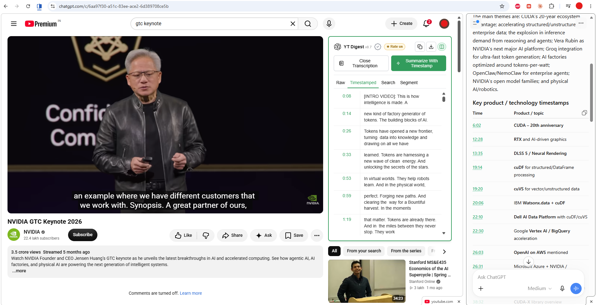
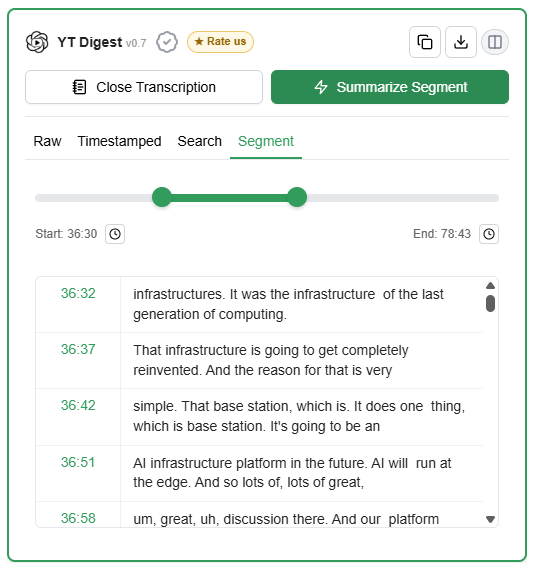

YouTube, with a little help from ChatGPT
Understand the video.
Find the moments that matter.
YT Digest is a free Chrome extension that brings YouTube transcripts into your own ChatGPT conversation. Get a summary, ask questions, and use timestamps in the answers to return to the moments you want to watch.
Free to use · No API key · Uses your own ChatGPT

01 · Start with the transcript
Read it instead of rewinding it.
A long lecture, podcast, or tutorial can have plenty worth understanding. Open its transcript with YT Digest to put the words beside the video. Read at your own pace, skim ahead, or revisit a sentence you missed.


Works with YouTube videos that have available subtitles.
02 · Understand the big picture
Your own ChatGPT.
So much more than a summary.
YT Digest brings the transcript and a suggested prompt into your own ChatGPT conversation. Get the main ideas, ask questions, and turn what you’ve watched into something you can use.
Make it study material. Ask for a study guide, practice questions, or flashcards.
Make it visual. Turn the ideas into a poster with ChatGPT’s image tools.
Build on what you learn. With memory enabled, ask ChatGPT to remember useful takeaways for future conversations—so ideas from different videos can connect over time.
It’s your conversation, with your ChatGPT tools. You choose where it goes next.

03 · Watch the part that matters
From an answer
to the exact moment.
A summary helps you decide what deserves a closer look. Keep YouTube and ChatGPT side by side in Chrome Split View, and use Summarize With Timestamp to bring time references into the conversation.
When ChatGPT includes timestamps in its answer, YT Digest turns them into links. Click one to jump to that moment in the video and hear the explanation in context.
How to put YouTube and ChatGPT side by side
Available in Chrome version 153 onwards. Right-click your YouTube tab and choose Add tab to new split view. Load the transcript, then click Summarize With Timestamp. YT Digest opens ChatGPT in the other pane and prepares your prompt. Ask for a summary with timestamps, then send it.
04 · Explore a little deeper
Found something interesting?
Focus on just that part.
You don’t always need to discuss the whole video. Search the transcript for a word or phrase to find a passage, and click its timestamp to watch it.
To explore that passage with ChatGPT, open Segment, choose its start and end points, and click Summarize Segment. Only that excerpt goes into the conversation, keeping your next question focused.


05 · Keep a reference
Bring the transcript into your notes.
When you want to keep the source material, copy the transcript into your notes or download it for later. You’ll have the words close at hand when you return to your work.
Copy and Download are in the top-right corner of the transcript panel.
A few things before you start.
Is YT Digest free?
Yes. YT Digest is completely free and requires no API keys. It copies the YouTube transcript into your own ChatGPT conversation, giving you full control.
Do I need Split View?
No. YT Digest opens ChatGPT in a new tab and prepopulates the transcript. If Split View is enabled, it opens ChatGPT in the other pane.
Does it work with every YouTube video?
YT Digest works with videos that have available subtitles.
Make more of the next video you open.
Read the transcript. Get the big picture. Explore the moments that matter to you.
Free to use · No API key · Made for Chrome